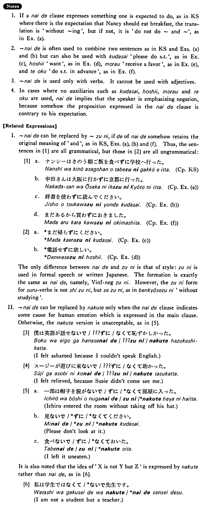

ないで (B. 271)
- (ks).
- ナンシーは昨日朝ご飯を食べないで学校へ行った・行きました。
- Nancy went to school yesterday without eating her breakfast.
- (a).
- 中田さんは大阪に行かないで京都に行った。
- Mr. Nakada didn't go to Osaka; he went to Kyoto.
- (b).
- 辞書を使わないで読んで下さい。
- Please read it without using a dictionary.
- (c).
- まだ帰らないで下さい。
- Please don't go home yet.
- (d).
- 電話しないで欲しい。
- I want you not to call me.
- (e).
- やかましくしないで貰いたい。
- I want you to not make noises.
- (f).
- まだあるから買わないでおきました。
- Because I still have it, I didn’t buy it (in advance).
